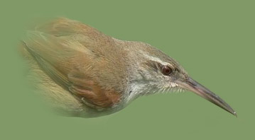
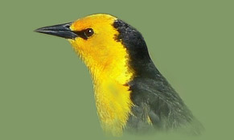

|
www.fotosaves.com.ar
|
|
 Pajonalera Pico Recto - Straight-billed Reedhaunter |
Photos of birds
and other wildlife of Argentina Celebrating more than 30 years! Welcome to my site! Check out my photos of birds, mammals, reptiles, butterflies, other insects, etc. Also check out my trip reports, paintings & videos. Thank you for visiting! ENTER |
|
Fotos de aves
y otra fauna silvestre de Argentina ¡Celebrando más de 30 años!
¡Bienvenido a mi sitio! Encontrarás las fotos que he tomado de aves y otros animales silvestres de Argentina. Además están mis relatos de viajes a la naturaleza, pinturas, videos, etc.
¡Gracias por visitar! INGRESAR |
 Tordo Amarillo - Saffron-cowled Blackbird |
|
Creado
por / Created by: Alec Earnshaw
- Buenos Aires, Argentina
Todas las fotos son/ All photos are (c) A. Earnshaw 1992-2025 |
|
|